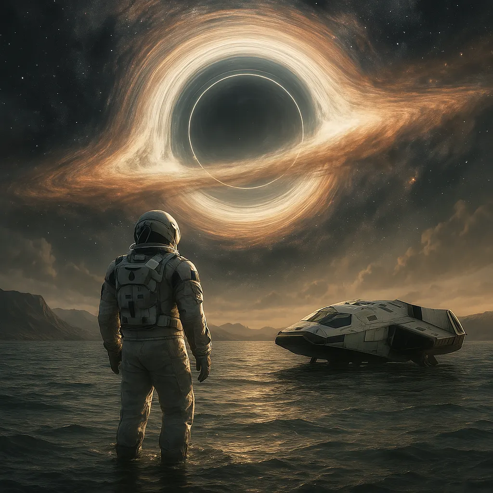
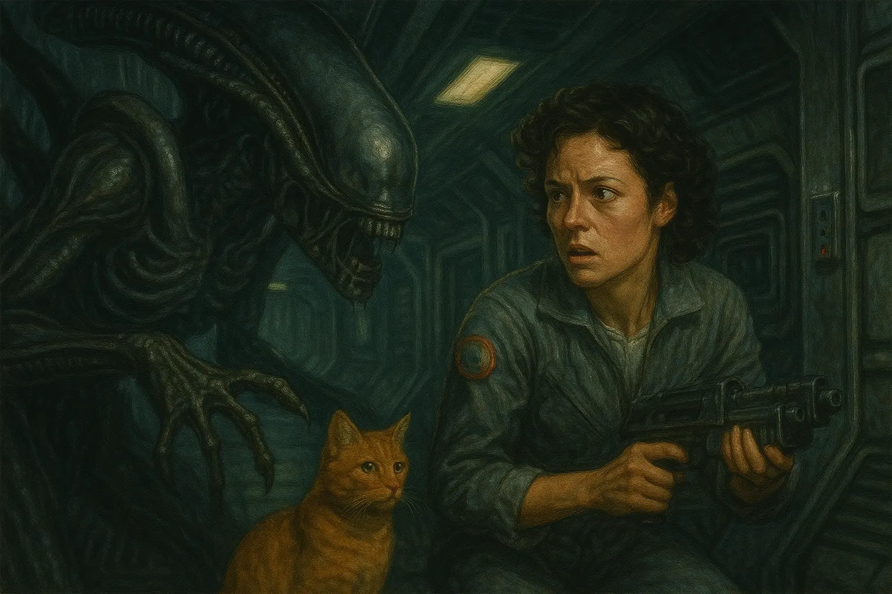
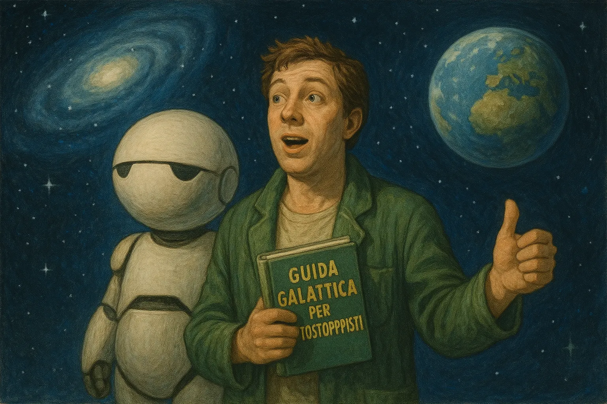
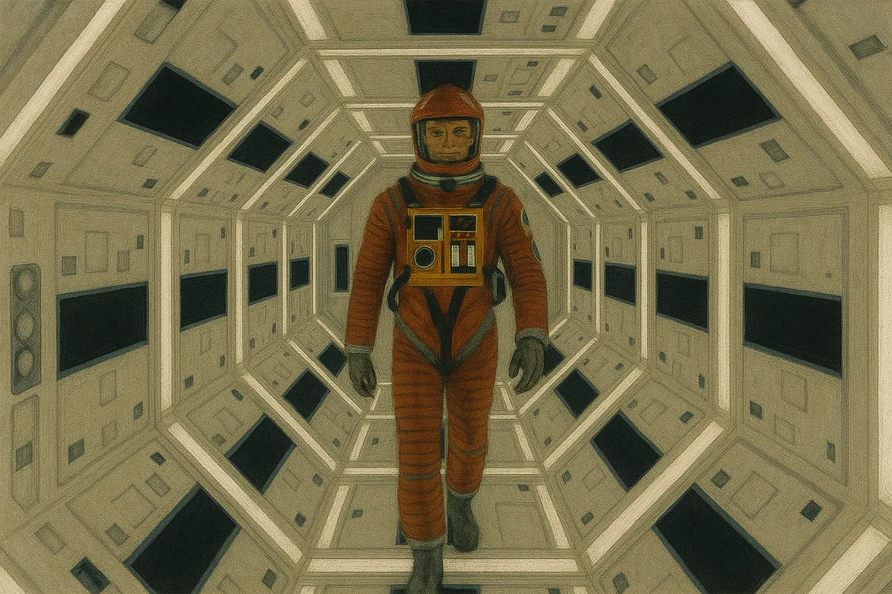

Cinque film sci-fi che devi assolutamente vedere
Se ami la fantascienza e non hai ancora visto questi capolavori, sappi che ti stai perdendo alcuni dei viaggi più epici che il cinema abbia mai regalato.
Dai paradossi temporali ai replicanti filosofici, passando per alieni ostili e delfini canterini: ecco cinque film sci-fi che ogni nerd che si rispetti deve avere nel proprio DNA cinematografico.
- Interstellar (2014, Christopher Nolan)
- Alien (1979, Ridley Scott)
- Guida galattica per autostoppisti (2005, Garth Jennings)
- 2001: Odissea nello Spazio (1968, Stanley Kubrick)
- Blade Runner (1982, Ridley Scott)
Interstellar (2014, Christopher Nolan)
Quando la Terra diventa praticamente inabitabile, l'unica speranza per l'umanità è viaggiare attraverso un wormhole alla ricerca di un nuovo pianeta. Ma Interstellar non è solo fantascienza hard: è anche un dramma familiare, una riflessione sul tempo e sull'amore che sfida le leggi della fisica.
La colonna sonora di Hans Zimmer ti entra sotto pelle, i viaggi tra dimensioni e i salti temporali ti friggono i neuroni con stile. È un film che va visto almeno due volte: la prima per lasciarsi travolgere, la seconda per provare a capirci qualcosa in più (forse). In definitiva: se ti piacciono i film che ti lasciano con la bocca aperta e una voglia improvvisa di studiare astrofisica, Interstellar è la tua astronave.
Alien (1979, Ridley Scott)
Un classico senza tempo che ha ridefinito il concetto di horror nello spazio. "Nello spazio nessuno può sentirti urlare", ecco: questa tagline è già un programma. L'astronave Nostromo, il facehugger, il chestburster... ogni scena è diventata iconica.
Ripley, interpretata da una gigantesca Sigourney Weaver, è l'eroina definitiva: tosta, sveglia e con un senso di sopravvivenza che farebbe impallidire anche Terminator. Alien riesce a mescolare ansia, claustrofobia e design biomeccanico in un modo ancora oggi insuperato. E sì, H.R. Giger ha creato un mostro che ti perseguita nei sogni. Letteralmente.
Guida galattica per autostoppisti (2005, Garth Jennings)
Basato sull'omonimo romanzo di Douglas Adams, questo è il film più assurdo, british e spassoso della lista. Se pensavi che la fantascienza fosse solo astronavi e apocalissi, preparati a rivalutare tutto grazie a delfini canterini, asciugamani indispensabili e una superintelligenza che decide che la risposta alla vita è… 42.
Arthur Dent è un tizio qualunque che si ritrova catapultato nello spazio il giorno in cui la Terra viene demolita per far posto a un'autostrada intergalattica. Il resto è un viaggio surreale popolato da alieni depressi, presidenti galattici pazzi e una guida elettronica molto utile. Da vedere assolutamente, magari con un asciugamano sulle spalle e una tazza di tè in mano. Don't panic!
2001: Odissea nello Spazio (1968, Stanley Kubrick)
Un'esperienza più che un film. 2001 è un viaggio psichedelico, filosofico e visivamente mozzafiato. Non aspettarti spiegoni o dialoghi infiniti: qui si comunica con le immagini, i silenzi, le musiche classiche e un computer che diventa inquietante quanto un villain horror. Hal 9000 è probabilmente uno dei cattivi più calmi e terrificanti della storia del cinema.
“Mi dispiace Dave, non posso farlo.” Ti viene ancora la pelle d'oca, vero?
Kubrick ha anticipato temi ancora oggi attualissimi: intelligenza artificiale, evoluzione umana, contatto con forme di vita superiori. Serve pazienza, ma è un viaggio che lascia il segno.
Blade Runner (1982, Ridley Scott)
Distopico, cupo, poetico. Blade Runner è uno di quei film che riescono a farti dubitare della tua stessa umanità. Rick Deckard è un cacciatore di replicanti, androidi talmente avanzati da essere quasi indistinguibili dagli esseri umani. Ma chi è davvero umano?
La Los Angeles del 2019 (eh sì, ormai è il passato…) è un incubo cyberpunk perfettamente costruito, con pioggia costante, neon ovunque e pubblicità giapponesi giganti. La fotografia è da manuale, la colonna sonora di Vangelis ti trasporta in un altro mondo.
E poi c'è Rutger Hauer, che improvvisa uno dei monologhi più belli e struggenti della storia del cinema: "Ho visto cose che voi umani non potreste immaginare…"
Questi cinque film non sono solo fantascienza: sono pietre miliari che hanno cambiato il modo in cui raccontiamo il futuro, lo spazio e l'animo umano. Se li hai già visti, riguardali. Se non li hai mai visti… be', hai appena trovato il programma perfetto per il prossimo weekend nerd.
Popcorn pronti e... via col viaggio!